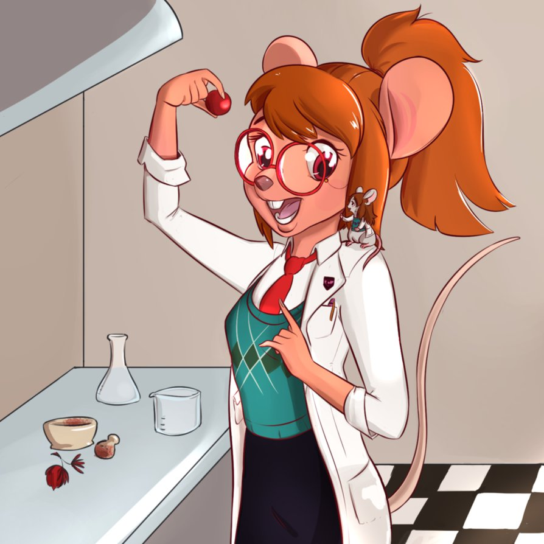
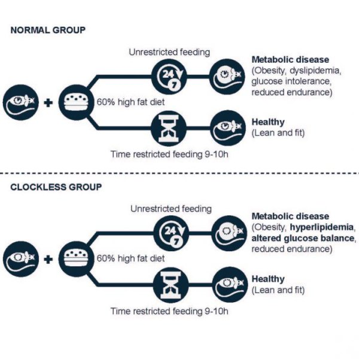

Як їсти смачне та жирне, але залишатись у формі – результати успішних експериментів

Дослідники із Каліфорнії провели дуже цікавий, хоч на перший погляд і простий експеримент30505-9). Частина піддослідних мишей мала доступ до висококалорійної їжі цілодобово, а інша частина – лише в часовий проміжок 10 годин на добу. Кількість спожитої їжі в обох випадках була однаковою. Виявилося, що у тварин, які споживали їжу у довільний час, розвивалися метаболічні порушення, у той час, коли інші миші, які зʼїдали те ж саме, але протягом 10 годин, залишалися здоровими.
Окрім того, частина мишей в досліді була генетично дефектною – з неактивними генами "біологічного годинника", що означає їх схильність до ожиріння, діабету, жирових хвороб печінки та підвищеного рівня холестерину. 10-годинний проміжок споживання їжі у цьому випадку також сприяв уникненню розвитку таких хвороб.

"Для багатьох із нас день починається із чашки кави рано-вранці і закінчується перекусом перед сном через 14-15 годин" - розповідає професор лабораторії Інституту Салка. "Але споживання денного раціону протягом 10 годин і утримання від їжі в інший час може істотно покращувати наше здоров'я, незалежно від нашого біологічного годинника та генетичних схильностей".
Коментарі від нас:
На перший погляд це лише рімейк "не їсти після шести", однак це також і потенційна можливість потішити себе жирненьким-солоденьким о 9 вечора... якщо снідаєте о 11 ранку :)
Також не забуваємо, що дані результати було отримано в дослідах на мишах. Ймовірність анологічного результату на людях неймовірно висока, але не стовідсоткова. Однак, що в нашому бентежному світі має стовідсоткову гарантію?.. :)